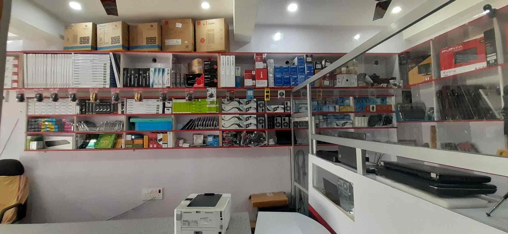
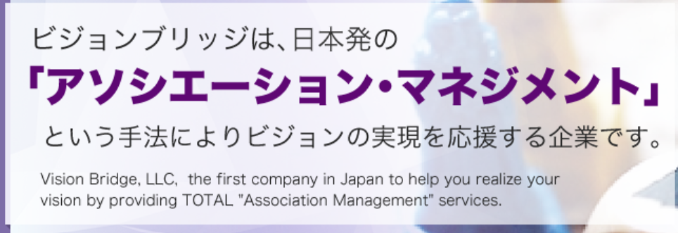

経験
2019年から2020年にかけてネパールのコンピュータのお店で働きながら大学を勉強しました。
学んだこと

- 💻 パソコンの基本的な仕組みと構造
- 🛠 ハードウェアの組み立てと交換方法
- 🧩 ソフトウェアのインストールと初期設定
- 🐞 トラブルシューティングと問題解決能力
- 💬 お客様対応とコミュニケーションスキル
- 📦 在庫管理と商品知識の習得
- 🧾 見積書や請求書の作成方法
- 📈 セールストークと販売技術
- 🔐 データのバックアップとセキュリティ対策
- 🔄 パソコンのアップグレードと最適化
人々の笑顔を見るのが好きで北海道で障害者の方々とクリスマスの時バーベキューパーティーに参加しました。


思い出
最初は言葉のバリアがあって、ちょっと緊張しました。でも、すぐみんなと仲良くなりました。
できるだけ話すようにがんばりました。それはとてもいい経験でした。
最後に、みんなが手書きの手紙をくれて、その時めっちゃうれしかったです。
2023年12月12日 高校生産に母国であるネパールについて紹介しました。
日本の高校生に母国ネパールを紹介する機会がありました。ネパールの文化や自然、
伝統について話しました。自分の国を紹介できて、とても誇りに思いました。
千葉モードビジネス専門学校で、クラスのみんなと一緒にネパールの「ダサイン」というお祭りでセロロティを販売しました。
2025年3月3日から2025年3月11日まで有限会社ビジョンブリッジでインターンシップをしました。

学んだこと
- web page 制作
- 日本のビジネスマナーや敬語の使い方を学びました。
- 日本の働き方や職場文化を体験しました。
- 毎日、報告・連絡・相談（ほうれんそう）を実践しました。
- HTMLやCSSなど、ウェブ開発の基本技術を学びました。
- チームと協力して仕事をすることが必要だと分かりました。